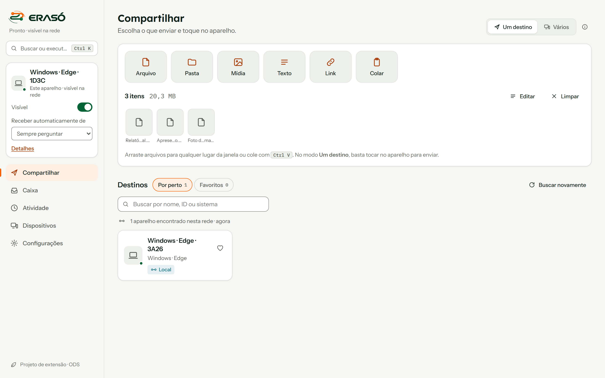
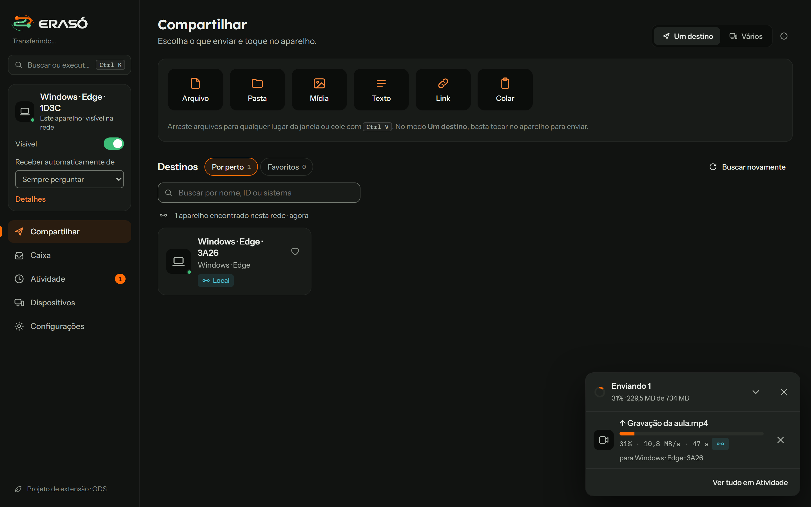
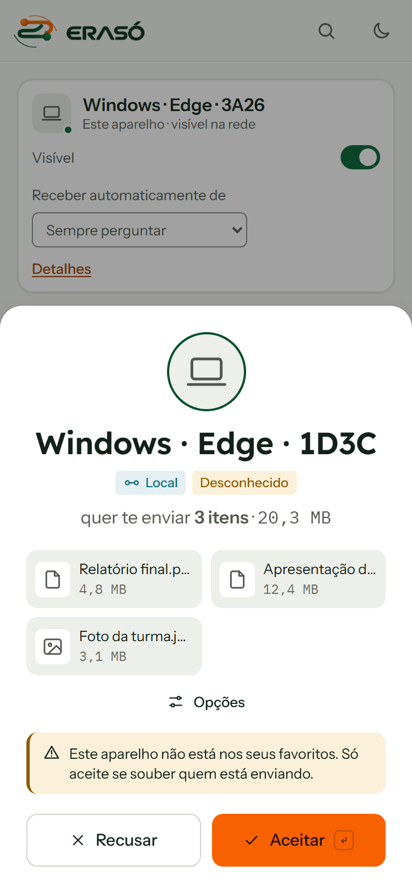
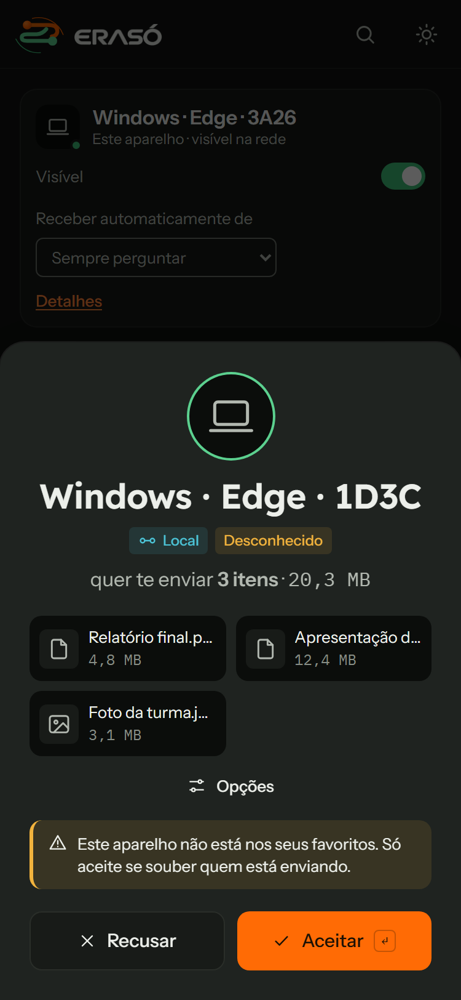

Protótipo funcional · Projeto de extensão universitária
Compartilhe arquivos entre seus aparelhos.
De uma ponta à outra.
Envie arquivos, textos e links entre celular e computador, direto de um navegador ao outro, sem instalar nada. No mesmo Wi-Fi, os aparelhos se encontram sozinhos.




Recursos da plataforma
Envio direto entre aparelhos, com aprovação de cada recebimento e uma Caixa pessoal neste aparelho.
Encontro automático
No mesmo Wi-Fi os aparelhos aparecem sozinhos. Em outras redes, use uma sala com código de 6 letras ou o pareamento por QR Code.
Aprovação de cada recebimento
Cada pedido pode ser aceito, recusado ou parcialmente recebido. É possível exigir PIN, e a conexão entre os aparelhos é criptografada.
Caixa pessoal
Guarde textos, links e arquivos neste aparelho, com prazo de 1, 7 ou 30 dias. Não é sincronizada entre aparelhos.
Acessibilidade
Temas claro, escuro e de alto contraste, uso completo pelo teclado e textos em linguagem simples.
Como funciona
O envio tem três passos: abrir o ERASÓ, escolher o conteúdo e tocar no aparelho de destino.
Abra o ERASÓ
No navegador do computador e do celular. O aparelho aparece para os outros da mesma rede ou sala.
Escolha o que enviar
Arquivos, pastas, fotos, textos ou links. Arraste, cole ou toque para adicionar.
Toque no aparelho
O aparelho de destino aceita o pedido e a transferência começa, direto entre os dois aparelhos.
Do aparelho A ao aparelho B
Os aparelhos se encontram por um código ou por um servidor leve. Arquivos e textos seguem direto, de navegador a navegador, e nenhum servidor os recebe.
| Camada | Tecnologia | Função |
|---|---|---|
| Interface | HTML, CSS e JavaScript puros | Aplicativo e site, sem framework e sem etapa de compilação. |
| Serviço de apresentação | Cloudflare Workers e Durable Objects (WebSocket) | Presença dos aparelhos e repasse da sinalização, no plano gratuito. Também há uma versão em Node.js 18+ para rodar na própria rede. |
| Servidor próprio (opcional) | Node.js 18+, sem dependências | Presença dos aparelhos por eventos SSE e repasse da sinalização, para quem quer descoberta automática. |
| Pareamento sem servidor | QR Code (gerador próprio) e jsQR (leitura) | O código da conexão vai em QR Code, link ou texto; a câmera lê o QR Code no próprio aparelho. |
| Conexão entre aparelhos | WebRTC (canal de dados, DTLS) | Transferência direta e criptografada de arquivos, textos e links. |
| Entre redes diferentes | STUN e, se necessário, TURN | Descoberta do endereço público e retransmissão. O TURN ainda [a definir]. |
| Dados no aparelho | localStorage e IndexedDB | Preferências, histórico e Caixa, apenas no navegador. |
| Qualidade | Testes automatizados com navegadores reais | Servidor, rede, interface e ponta a ponta. |
Código aberto no GitHub
O código, os testes e a documentação técnica estão no repositório, sob a Apache License 2.0.
Perguntas frequentes
Preciso instalar alguma coisa?
Não. O ERASÓ funciona no navegador, direto do endereço do site. Não há versão para computador.
Funciona sem internet?
O site e o encontro dos aparelhos precisam de internet. O encontro usa um serviço leve na Cloudflare (ou o pareamento por QR Code, que não usa serviço nenhum); entre redes diferentes, o aparelho também consulta um servidor STUN público. O conteúdo vai direto entre os aparelhos.
É seguro?
O conteúdo vai direto entre os aparelhos, criptografado, sem passar pelo servidor, e cada pedido precisa ser aprovado. É possível exigir PIN. O projeto ainda não passou por auditoria independente; a página Segurança informa o que existe e o que não existe.
Onde os arquivos são salvos?
Na pasta de downloads do navegador. O navegador define a pasta; o ERASÓ não tem seletor de pasta.
O que é a Caixa?
Um espaço neste aparelho para guardar textos, links e arquivos, com prazo de 1, 7 ou 30 dias. Ela não é sincronizada entre aparelhos.
Quem desenvolve o ERASÓ?
É um projeto de extensão universitária ligado à Cruzeiro do Sul Virtual. Os detalhes estão em Projeto acadêmico.
Entre em contato
Acesse o aplicativo ou consulte os canais de atendimento do projeto.